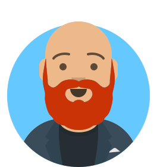
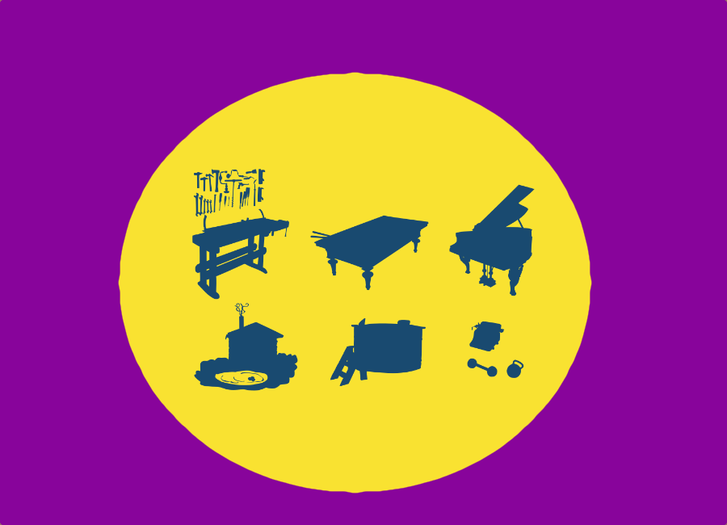

Experienced Senior Leader - Technologist - Consultant

Prideraiser - Co Founder
Since 2017, we've been building an international movement within independent soccer supporter groups. This movement has helped raise hundreds of thousands of dollars to support LGBTQ-embracing organizations in local communities.
Board Member
Over the last ten years, I have served as a board member at my local church, a local Catholic high school, and a non-profit organization that opened and maintained a dog park. I am a committed volunteer looking for my next board opportunity.
Current Applications & Software
Splunk Enterprise
Atlassian Cloud stack (including Jira/JQL)
Slack Admin & App Development
GitHub Actions.
Wordpress & Drupal CMS
Python
AWS Skills & Proficiencies
Solution Architect Associate (In Progress)
Lambda
EC2
ECS
S3
Route53
Master of Arts in Religion - 2019
Trinity Episcopal School for Ministry
Major in Church History and Theology. Program capstone thesis:
Towards a Christian Ethical Framework for Artificial Intelligence.
Bachelor of Arts in History - 2006
Hillsdale College
Minors in Music and English.
Focus on Voice, Percussion, and Journalism.